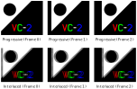
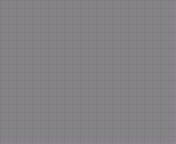
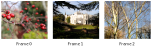
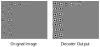
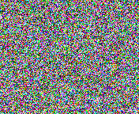

VC-2 decoder conformance testing procedure¶
The VC-2 decoder conformance testing procedure is described below. In summary, each of the bitstreams generated in the previous step (Generating test cases), we will be decoded using the candidate decoder and the resulting raw video compared with a reference decoding.
Note
Whilst it is possible to carry out the decoder testing procedure manually, we recommend producing a script to automate the steps required for the particular decoder being tested.
Decoding the reference bitstreams¶
For each codec feature set provided, a set of bitstreams which test different
decoder behaviours are produced. These are located in files whose names match
the pattern <codec feature set name>/decoder/<test-case-name>.vc2. The
specific test cases generated will vary depending on the codec features
specified.
Each bitstream must be decoded independently by the decoder under test. The decoded pictures must then be stored as raw video as described in the Video file format section.
Checking the decoded pictures¶
Each bitstream has an associated reference decoding in the <codec feature set
name>/decoder/<test-case-name>_expected/ directory. The output of the decoder
under test must be identical to the reference decoding.
The vc2-picture-compare tool is provided for comparing decoder outputs with the reference decodings. It takes as argument either the names of two raw picture files, or the names of two directories containing numbered raw picture files. Differences between pictures are then reported.
For example:
$ vc2-picture-compare expected/ actual/
Comparing expected/picture_0.raw and actual/picture_0.raw
Pictures are identical
Comparing expected/picture_1.raw and actual/picture_1.raw
Pictures are identical
Comparing expected/picture_2.raw and actual/picture_2.raw
Pictures are identical
Summary: 3 identical, 0 different
For a test case to pass:
The vc2-picture-compare tool must report
Pictures are identical, with no warnings, for every picture in the reference decoding.No additional pictures must have been decoded by the decoder under test.
The decoder under test must not have crashed or indicated an error condition while decoding the bitstream.
For a decoder to pass the conformance test, all test cases, for all supported codec feature sets must pass. If any tests fail, this indicates that the decoder is non-conformant to the VC-2 specification.
The section below outlines the purpose of each test case and gives advice on what that case failing could indicate. Alternatively, once all decoder tests have passed, we can continue onto VC-2 encoder conformance testing procedure.
Decoder Test Cases¶
The purpose of each test case (or group of test cases), along with advice on debugging failing tests is provided below. In all test cases, the bitstream provided is a valid bitstream permitted by the spec.
Decoder test case: absent_next_parse_offset¶
Tests handling of missing ‘next parse offset’ field.
The ‘next parse offset’ field of the parse_info header (see (10.5.1))
may be set to zero (i.e. omitted) for pictures. This test case verifies
that decoders are still able to decode streams with this field absent.
Decoder test case: concatenated_sequences¶
Tests that streams containing multiple concatenated sequences can be decoded.
A stream consisting of the concatenation of two sequences (10.3) with one frame each, the first picture is given picture number zero in both sequences.
Decoder test case: custom_quantization_matrix¶
Tests that a custom quantization matrix can be specified.
A series of bitstreams with different custom quantisation matrices are generated as follows:
custom_quantization_matrix[zeros]Specifies a custom quantisation matrix with all matrix values set to zero.
custom_quantization_matrix[arbitrary]Specifies a custom quantisation matrix with all matrix values set to different, though arbitrary, values.
custom_quantization_matrix[default]Specifies a custom quantisation matrix containing the same values as the default quantisation matrix. This test case is only generated when a default quantization matrix is defined for the codec.
These test cases are only generated when permitted by the VC-2 level in use.
Note
For lossy coding modes, the encoded picture will contain a noise signal
(see the static_noise test case).
For lossless coding modes, the encoded picture will be the test pattern
used by the lossless_quantization test case. This
test pattern is designed to be losslessly encodable when some
quantization is applied.
Decoder test case: dangling_bounded_block_data¶
Tests that transform values which lie beyond the end of a bounded block are read correctly.
Picture slices (13.5.3) and (13.5.4) contain transform values in bounded blocks (A.4.2). These test cases include bounded blocks in which some encoded values lie off the end of the block. Specifically, the following cases are tested:
dangling_bounded_block_data[zero_dangling]A zero value (1 bit) is encoded entirely beyond the end of the bounded block.
dangling_bounded_block_data[sign_dangling]The final bit (the sign bit) of a non-zero exp-golomb value is dangling beyond the end of the bounded block.
dangling_bounded_block_data[stop_and_sign_dangling]The final two bits (the stop bit and sign bit) of a non-zero exp-golomb value are dangling beyond the end of the bounded block.
dangling_bounded_block_data[lsb_stop_and_sign_dangling]The final three bits (the least significant bit, stop bit and sign bit) of a non-zero exp-golomb value are dangling beyond the end of the bounded block.
Note
The value and magnitudes of the dangling values are chosen depending on the wavelet transform in use and may differ from the illustrations above.
Decoder test case: default_quantization_matrix¶
Tests that the default quantization matrix can be used.
This test case is only generated when a non default value is specified
for the quantization_matrix codec features CSV entry but when a default
quantization matrix is defined.
Note
This is the only test case which sets the custom_quant_matrix flag
(12.4.5.3) to 0 when a quantization_matrix is supplied in the codec
features CSV.
Note
For lossy coding modes, the encoded picture will contain a noise signal
(see the static_noise test case).
For lossless coding modes, the encoded picture will be the test pattern
used by the lossless_quantization test case. This
test pattern is designed to be losslessly encodable when some
quantization is applied.
Decoder test case: extended_transform_parameters¶
Tests that extended transform parameter flags are handled correctly.
Ensures that extended transform parameters fields (12.4.4) are correctly handled by decoders for symmetric transform modes.
extended_transform_parameters[asym_transform_index_flag]Verifies that
asym_transform_index_flagcan be set to1.extended_transform_parameters[asym_transform_flag]Verifies that
asym_transform_flagcan be set to1.
These test cases are skipped for streams whose major version is less than 3
(which do not support the extended transform parameters header).
Additionally, these test cases are skipped for asymmetric transforms when
the flag being tested must already be 1.
Decoder test case: interlace_mode_and_pixel_aspect_ratio¶
Tests that the interlacing mode and pixel aspect ratio is correctly decoded.
These tests require that the decoded pictures are observed using the intended display equipment for the decoder to ensure that the relevant display metadata is passed on.
interlace_mode_and_pixel_aspect_ratio[static_sequence]A single frame containing a stationary graphic at the top-left corner on a black background, as illustrated below.
If the field ordering (i.e. top field first flag, see (7.3) and (11.3)) has been decoded correctly, the edges should be smooth. If the field order has been reversed the edges will appear jagged.
If the pixel aspect ratio (see (11.4.7)) has been correctly decoded, the white triangle should be as wide as it is tall and the ‘hole’ should be circular.
interlace_mode_and_pixel_aspect_ratio[moving_sequence]A sequence of 10 frames containing a graphic moving from left to right along the top of the frame. In each successive frame, the graphic moves 16 luma samples to the right (i.e. 8 samples every field, for interlaced formats).
For progressive formats, the graphic should appear with smooth edges in each frame.
For interlaced formats, the graphic should move smoothly when displayed on an interlaced monitor. If displayed as progressive frames (as in the illustration above), the pictures will appear to have ragged edges.
Decoder test case: lossless_quantization¶
Tests support for quantization in lossless decoders.
Quantization can, in principle, be used in lossless coding modes in cases where all transform coefficients are divisible by the same factor. This test case contains a synthetic test pattern with this property.
This test case is only generated for lossless codecs.
Note
For informational purposes, an example decoded test pattern is shown below:
Note the faint repeating pattern.
Decoder test case: padding_data¶
Tests that the contents of padding data units are ignored.
This test case consists of a sequence containing two blank frames in which every-other data unit is a padding data unit (10.4.5) of various lengths and contents (described below).
padding_data[empty]Padding data units containing zero padding bytes (i.e. just consisting of a parse info header).
padding_data[zero]Padding data units containing 32 bytes set to 0x00.
padding_data[non_zero]Padding data units containing 32 bytes containing the ASCII encoding of the text
Ignore this padding data please!.padding_data[dummy_end_of_sequence]Padding data units containing 32 bytes containing an encoding of an end of sequence data unit (10.4.1).
Where padding data units are not permitted by the VC-2 level in use, these test cases are omitted.
Decoder test case: picture_numbers¶
Tests picture numbers are correctly read from the bitstream.
Each test case contains 8 blank pictures numbered in a particular way.
picture_numbers[start_at_zero]The first picture has picture number 0.
picture_numbers[non_zero_start]The first picture has picture number 1000.
picture_numbers[wrap_around]The first picture has picture number 4294967292, with the picture numbers wrapping around to 0 on the 4th picture in the sequence.
picture_numbers[odd_first_picture]The first picture has picture number 7. This test case is only included when the picture coding mode is 0 (i.e. pictures are frames) since the first field of each frame must have an even number when the picture coding mode is 1 (i.e. pictures are fields) (11.5).
Decoder test case: real_pictures¶
Tests real pictures are decoded correctly.
A series of three still photographs.
Note
The images encoded in this sequence are generated from 4256 by 2832 pixel, 4:4:4, 16 bit, standard dynamic range, RGB color images with the ITU-R BT.709 gamut. As such, the decoded pictures may be of reduced technical quality compared with the capabilities of the format. The rescaling, color conversion and encoding algorithms used are also basic in nature, potentially further reducing the picture quality.
Decoder test case: repeated_sequence_headers¶
Tests the decoder can handle a stream with repeated sequence headers.
This test case consists of a sequence containing two frames in which the sequence header is repeated before every picture.
This test may be omitted if the VC-2 level prohibits the repetition of the sequence header.
Decoder test case: signal_range¶
Tests that a decoder has sufficient numerical dynamic range.
These test cases contain a series of pictures containing test patterns designed to produce extreme signals within decoders. During these test cases, no integer clamping (except for final output clamping) or integer overflows must occur.
A test case is produced for each picture component:
signal_range[Y]Luma component test patterns.
signal_range[C1]Color difference 1 component test patterns.
signal_range[C2]Color difference 2 component test patterns.
These test cases are produced by encoding pictures consisting test patterns made up of entirely of legal (in range) signal values. Nevertheless, the resulting bitstreams may produce large intermediate values within a decoder, though these are not guaranteed to be worst-case.
Note
For informational purposes, an example of a set of test patterns before and after encoding and quantisation is shown below:
Note
The quantization indices used for lossy codecs are chosen to maximise the peak signal range produced by the test patterns. These are often higher than a typical VC-2 encoder might pick for a given bit rate but are nevertheless valid.
An informative metadata file is provided along side each test case which
gives, for each picture in the bitstream, the parts of a decoder which are
being tested by the test patterns. See
vc2_bit_widths.helpers.TestPoint for details.
Decoder test case: slice_padding_data¶
Tests that padding bits in picture slices are ignored.
Picture slices (13.5.3) and (13.5.4) may contain padding bits beyond the end of the transform coefficients for each picture component. These test cases check that decoders correctly ignore these values. Padding values will be filled with the following:
slice_padding_data[slice_?_all_zeros]Padding bits are all zero.
slice_padding_data[slice_?_all_ones]Padding bits are all one.
slice_padding_data[slice_?_alternating_1s_and_0s]Padding bits alternate between one and zero, starting with one.
slice_padding_data[slice_?_alternating_0s_and_1s]Padding bits alternate between zero and one, starting with zero.
slice_padding_data[slice_?_dummy_end_of_sequence]Padding bits will contain bits which encode an end of sequence data unit (10.6).
The above cases are repeated for the luma and color difference picture
components as indicated by the value substituted for ? in the test case
names above. For low-delay pictures these will be Y (luma) and C
(interleaved color difference). For high quality pictures these will be
Y (luma), C1 (color difference 1) and C2 (color difference 2).
Decoder test case: slice_prefix_bytes¶
Tests the decoder can handle a non-zero number of slice prefix bytes.
Produces test cases with a non-zero number of slice prefix bytes containing the following values:
slice_prefix_bytes[zeros]All slice prefix bytes are 0x00.
slice_prefix_bytes[ones]All slice prefix bytes are 0xFF.
slice_prefix_bytes[end_of_sequence]All slice prefix bytes contain bits which encode an end of sequence data unit (10.4).
These test cases apply only to the high quality profile and are omitted when the low delay profile is used.
Decoder test case: slice_size_scaler¶
Tests that the ‘slice_size_scaler’ field is correctly handled.
This test case generates a sequence which sets slice_size_scaler value (13.5.4) 1 larger than it otherwise would be.
This test case is only generated for the high quality profile, and levels which permit a slice size scaler value greater than 1.
Decoder test case: source_parameters_encodings¶
Tests the decoder can decode different encodings of the video format metadata.
This series of test cases each contain the same source parameters (11.4), but in different ways.
source_parameters_encodings[custom_flags_combination_?_base_video_format_?]For these test cases, the base video format which most closely matches the desired video format is used. Each test case incrementally checks that source parameters may be explicitly set to their desired values (e.g. by setting
custom_*_flagbits to 1).source_parameters_encodings[base_video_format_?]These test cases, check that other base video formats may be used (and overridden) to specify the desired video format. Each of these test cases will explicitly specify as few video parameters as possible (e.g. setting as many
custom_*_flagfields to 0 as possible).
Tip
The vc2-bitstream-viewer may be used to display the encoding used in a given test case as follows:
$ vc2-bitstream-viewer --show sequence_header path/to/test_case.vc2
Note
Some VC-2 levels constrain the allowed encoding of source parameters in the bit stream and so fewer test cases will be produced in this instance.
Note
Not all base video formats can be used as the basis for encoding a specific video format. For example, the ‘top field first’ flag (11.3) set by a base video format cannot be overridden. As a result, test cases will not include every base video format index.
Decoder test case: static_gray¶
Tests that the decoder can decode a maximally compressible sequence.
This sequence contains an image in which every transform coefficient is zero. For most color specifications (11.4.10), this decodes to a mid-gray frame.
This special case image is maximally compressible since no transform coefficients need to be explicitly coded in the bitstream. For lossless coding modes, this will also produce produce the smallest possible bitstream.
Decoder test case: static_noise¶
Tests that decoder correctly decodes a noise plate.
A static frame containing pseudo-random uniform noise as illustrated below:
Decoder test case: static_ramps¶
Tests that decoder correctly reports color encoding information.
This test requires that the decoded pictures are observed using the intended display equipment for the decoder to ensure that the relevant color coding metadata is passed on.
A static frame containing linear signal ramps for white and primary red, green and blue (in that order, from top-to-bottom) as illustrated below:
The color bands must be in the correct order (white, red, green, blue from top to bottom). If not, the color components may have been ordered incorrectly.
The red, green and blue colors should correspond to the red, green and blue primaries for the color specification (11.4.10.2).
Note
When D-Cinema primaries are specified (preset color primaries index 3), red, green and blue are replaced with CIE X, Y and Z respectively. Note that these may not represent physically realisable colors.
The left-most pixels in each band are notionally video black and the right-most pixels video white, red, green and blue (respectively). That is, oversaturated signals (e.g. ‘super-blacks’ and ‘super-white’) are not included.
Note
For lossy codecs, the decoded signal values may vary due to coding artefacts.
The value ramps in the test picture are linear, meaning that the (linear) pixel values increase at a constant rate from left (black) to right (saturated white/red/green/blue). Due to the non-linear response of human vision, this will produce a non-linear brightness ramp which appears to quickly saturate. Further, when a non-linear transfer function is specified (11.4.10.4) the raw decoded picture values will not be linearly spaced.
Note
When the D-Cinema transfer function is specified (preset transfer function index 3), the saturated signals do not correspond to a non-linear signal value of 1.0 but instead approximately 0.97. This is because the D-Cinema transfer function allocates part of its nominal output range to over-saturated signals.